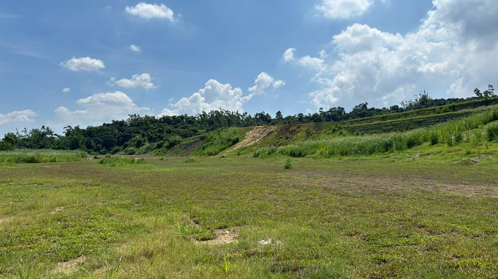
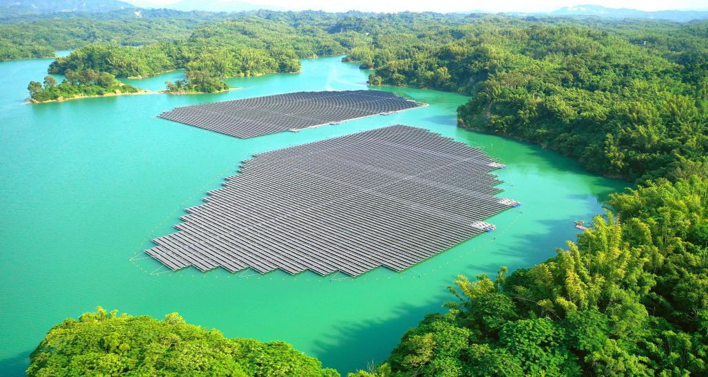
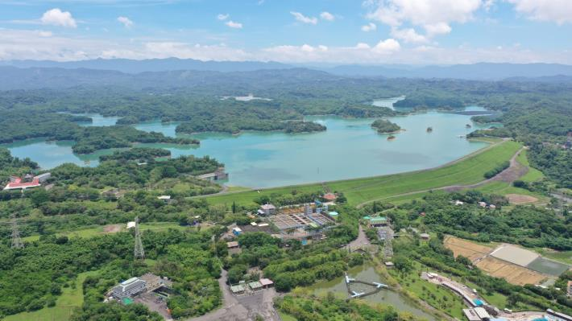
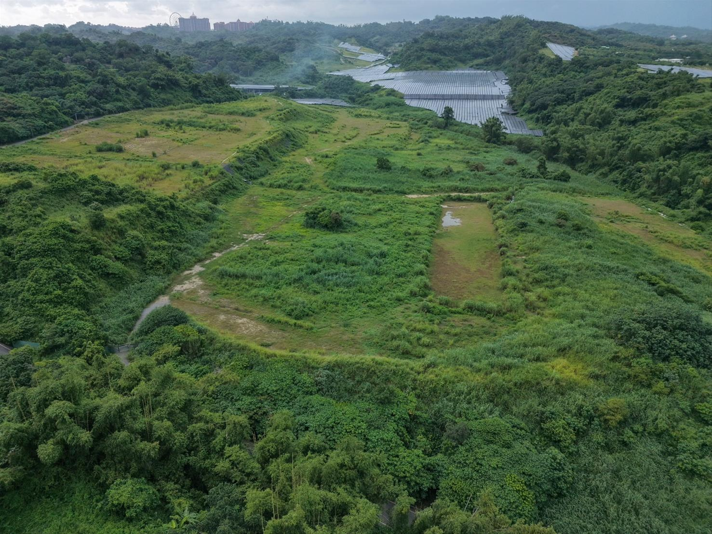
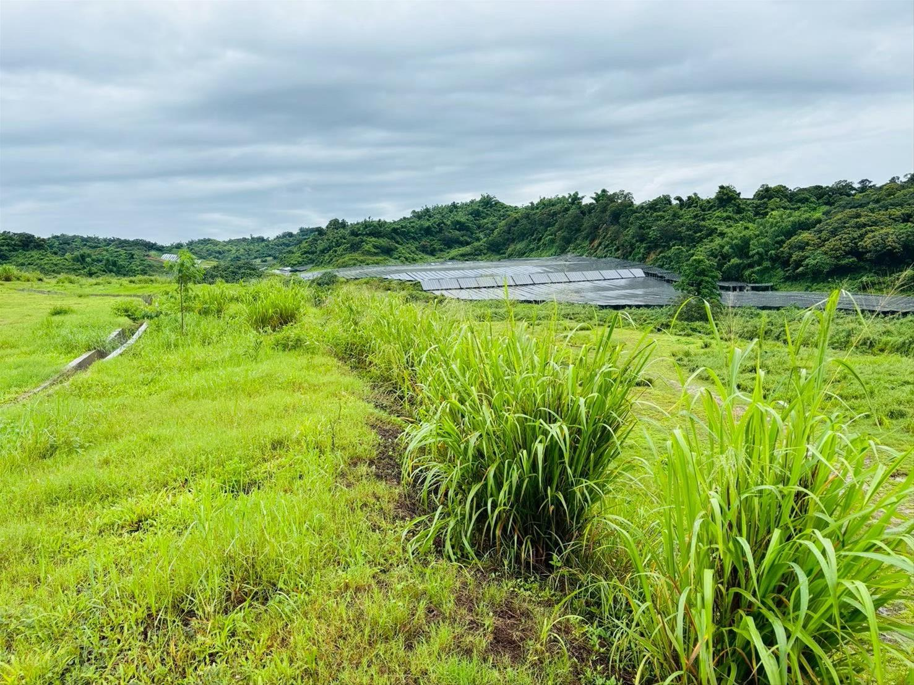
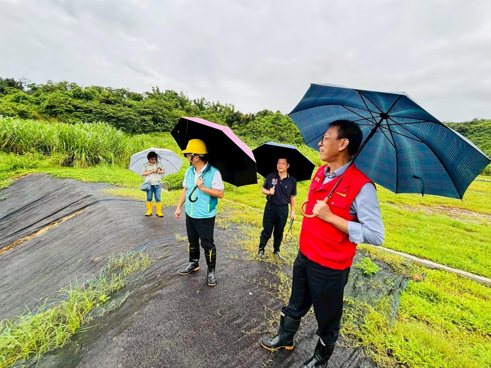
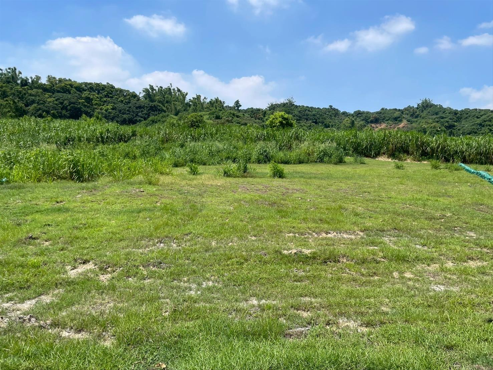
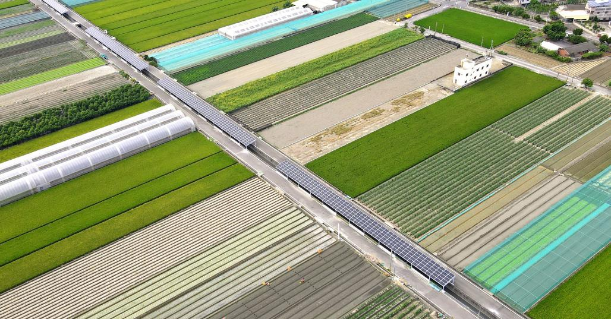

公共議題調查 · TAIWAN / 2026
綠電的背後，
土地發生了什麼？
從屋頂、農地到沿海魚塭，
用地圖與證據，看懂全台太陽光電。
開發規模、土地選址、環境治理，需要分開看。
每一個標點，都有它的已知與未知。
資料查核與網站更新：2026.11.19 · 台北時間
土地 × 生計 × 生態 概念示意，非案場影像
容量 ≠ 危害程度
GW、MW衡量發電設備規模，無法直接換算農地占用、污染或生態損失。上列兩組資料的月份、涵蓋對象也不同，不能相減推算新增量。
EXPLORE THE EVIDENCE
一張地圖，兩種視角
看開發規模，也看地方發生的事。
選擇標點或清單，閱讀來源與查核限制。
底圖暫時無法載入；標點、下方案例與縣市資料仍可查閱。
本圖為選錄案例與縣市概況，並非全臺案場清冊；沒有標點不表示沒有開發或沒有爭議。標點座標由地名人工近似定位，放大後亦不得當作地籍證據。
SCALE, NOT SEVERITY
22縣市，光電規模有多大？
統計截面 · 2026.02.28各縣市太陽光電
各縣市太陽光電
躉購容量
台電收購範圍內的設備容量，含屋頂及非屋頂設施。這不是全部併網裝置容量，也不是地面光電占地。
73.3%前六縣市占此躉購容量合計
臺南、彰化、雲林、高雄、屏東、嘉義縣
臺南、彰化、雲林、高雄、屏東、嘉義縣
來源：台電115年度購入電量明細。已發現較新3月表入口，但原檔連線逾時，尚未取得數值；本版不宣稱此圖為最新。查看資料限制
1 GW = 1,000 MW = 1,000,000 kW。圖表統一使用 MW，保留較小縣市可讀性。
單位：MW（千瓩）
查看精確數字與案件數
| 縣市 | 容量（kW） | 案件數 |
|---|
原表合計14,557,855.91 kW；各列顯示值加總為14,557,855.92 kW，差0.01 kW，應為小數位四捨五入；以原表合計計算占比。
LAND, LIVELIHOODS & ENVIRONMENT
爭議熱點，證據說到哪裡？
確認「有人陳情」與確認「環境受損」，
是兩件不同的事。
如何讀這些標籤
官方查核／檢測 只確認來源所載事項；報導／當事人陳述 包含民眾與業者意見，未必有因果鑑定；歷史／背景 不代表目前仍在開發；待查證 缺少個案文件，不據此認定違失。所有案例均有待追蹤事項。
特別關注分類由本專題依使用者指定之調查重點設定。「極高調查優先級」及「高關注水源保護」均不是政府危害等級，不與縣市容量排序連動。

極高調查優先級
大樹和山光電場
土地範圍與數字口徑橋檢載違規開發合計25,897.18㎡（約2.59公頃）：第一期23,552㎡＋第二期另2,345.18㎡。此數不是全部租地、全部案場或土石外流影響面積。
已確認的行政違失與官方查處
停工、水保裁處、第二期水保計畫與施工許可廢止，均有資料可查；橋檢起訴記載未依計畫工序施作防災設施、致生水土流失。刑事犯罪事實及責任仍由法院審理，不以起訴當作定罪。
環境風險與待查證
坡面沖蝕、土砂外流與下游排水安全是追蹤重點。官方2025年9月稱植生、3座滯洪沉砂池及排水設施完成；2026年10月4日水利局再確認，8月下旬豪雨後部分邊坡淺層滑動，要求11月30日前改善。截至本版查核期限未屆，仍需取得複查、豪雨後監測與驗收。官方更新。未取得可量化的下游受影響面積，不畫假定危害圈。
事件時間軸
- 報導市府已令停工；截至當年5月水保裁罰6次共90萬元。
- 水利局與技師現勘、檢方履勘；檢方記載現場有水土流失情形。
- 檢方搜索，並對負責人與技師聲請羈押獲准。
- 偵結起訴7人；9月23日公布並說明復育。市府稱第二期水保計畫與施工許可已廢止。
- 官方確認豪雨後部分邊坡淺層滑動，限11月30日前改善。
- 2026年11月30日改善期限尚未屆至；未取得後續驗收及確定判決，不能以2025年復育照推論今日安全。

高關注水源保護案件
烏山頭水庫水面光電
水域範圍與數字口徑光電設置水面約11.5公頃；以約1,026公頃水域為分母約占1.12%。設施覆蓋面積不是污染面積；枯水期實際水面變動，比例不可直接沿用。
已確認事項與違規查核
2026年5月已有部分浮台觸底、管線曝曬及拆卸處置報導。10月8日5測站鉛皆未檢出；ND表示低於方法偵測極限，並非零。本次未查得足以確認本案違規的裁處或確定判決，也未取得已證實污染的證據。
水源風險與待查證
枯水觸底造成結構受力、維修碎屑、風災破損及清理應變，值得持續查核。水質合格只適用採樣時地及檢測項目，不能取代底泥、極端事件後採樣與長期生態追蹤；契約禁止清潔劑也不能單獨證明每次操作合規。
事件時間軸
- 第一期完工運轉；不把二期規劃算作已建置。
- 管理處說明11.5公頃設置面積、清水清洗與每年5次水質檢測。
- 公視報導枯水期部分浮台觸底與管線曝曬；能源署稱已預防性拆卸及斷電隔離。
- 官方5測站檢測表：鉛均ND（方法偵測極限0.0026 mg/L），陰離子界面活性劑均<0.10 mg/L。
- 能源署再說明8月28日、9月18日採樣符合飲用水水源標準；本版同時列出較晚的10月8日原表。
- 市府說明，尚未建置的二期已由嘉南管理處完成解約；既有設施持續監測維運。
全台比較：同樣是光電，證據與風險並不相同
以下比較調查焦點與證據狀態，不做危害排名；面積各有定義，不可加總成全台受損土地。
| 地區／案例 | 範圍與口徑 | 已知證據 | 下一步 |
|---|---|---|---|
| 大樹和山 極高調查優先 | 違規開發約2.59公頃，依橋檢記載 | 行政查處、起訴、水土流失及復育紀錄 | 2026年淺層滑動之改善、判決及水保成效 |
| 烏山頭水庫 高關注水源保護 | 設置水面約11.5公頃，非污染範圍 | 觸底事件；水質抽驗與主管機關說明 | 受損清理、事件後水質與底泥 |
| 七股農場 | 原規劃提供146公頃造林地 | 審計與監察院查核 | 保留林木、復原及履約改善 |
| 雲林沿海 | 一次巡查60處，其中50處有維護問題 | 公視引述縣府；非全台比例 | 個案排水原因與複查結果 |
| 新塭滯洪池 | 災損設備與採樣水域，非養殖魚塭 | 風災及後續水質檢測 | 回收清運與復建安全 |
| 22縣市容量 | 同月躉購容量，含屋頂及非屋頂 | 官方統計規模 | 另取類型、地籍與監測，不能推估危害 |
ON THE GROUND / REAL PHOTOGRAPHS
把鏡頭拉近土地與水域
8張真實照片 · 可點開完整圖片
每張標明來源、發布或紀錄年度。
以下完整照片依政府機關開放宣告引用，不使用AI生成現場影像。未標實拍日的照片保留不確定性；不同年份影像不可直接當作同角度前後對照。和山2026年豪雨後滑動與烏山頭2026年枯水觸底，另附原始現場報導入口。
真實設備空拍；是歷史設置影像，不能用來判斷2026年觸底或維修狀況。
來源：農田水利署2022年報，印刷頁36
呈現水源場域背景；非光電設備近照，亦非污染範圍照片。
來源：臺南市政府水利局
原文提及8月19日空拍；單張照片日期未標，不將其當成豪雨後滑動的直接證明。
來源：高雄市政府水利局
地面視角可見植生與光電；請配合原文查處紀錄閱讀，不憑照片判定土地邊界。
來源：高雄市政府水利局
官方提供的會勘照片；機關會勘不等於已完成改善驗收。
來源：高雄市政府水利局早於2026年邊坡滑動更新，不能以此舊照認定目前已無風險。
來源：高雄市政府水利局
與前張同批官方復育照片，非新的2026年驗收紀錄。
來源：高雄市政府水利局
土地複合利用的比較案例；不是口湖、四湖積水案場，不與違規案例混用。
來源：農田水利署2022年報，印刷頁37WHAT WE KNOW / WHAT WE STILL NEED
怎樣才算嚴謹的環境調查？
先確認原來的土地
是工廠屋頂、農地、魚塭、滯洪池還是候鳥棲地？需比對地籍、法定分區與實際利用，不能只憑光電板影像判斷。
申請不等於已經施工
意向、同意備案、籌設、施工許可、完工與商轉各有差異。歷史照片和舊新聞也不直接代表今日現況。
用監測與鑑定釐清
積水、道路損壞或污染需現勘、背景值、採樣時間及工程資料。風災損毀不能直接推論重金屬已污染水域。
追蹤改善是否完成
看缺失複查、養殖實績、清理流向與復原保證。發電量及減碳效益，也應與土地、生態和居民權益一起評估。
本版的邊界
這是一份有來源的公開資料導讀，不是全台土地受損面積清查或政府危害分級。容量圖為22縣市同月截面；案例採目的性選錄，無法用案例數量替縣市排名。本版不沿用原對話的全台「極高／高」普遍評分；新增和山及烏山頭的指定關注標籤只作調查分類，也不從容量推算農地占用。要做面積評估，仍需案場地籍邊界、類型、施工年份、歷年影像及監測資料。
OPEN SOURCES / TRANSPARENT LIMITS
資料來源與查核紀錄
查核日：2026年11月19日（Asia/Taipei）。事件日期、統計日期與網站查核日分列；查核日不表示每個案件都已更新至當日。連結可讀性可能受原站防護或連線狀況影響。
照片與現場影像
各案例的「原報導／現場影像」連至真實採訪與照片頁面。和山官方照片與烏山頭及田尾支線官方年報照片附重用依據；其餘新聞照片保留於原站，未重製未獲授權的影像；首頁與分享圖是自行繪製的概念圖，不是現場照片。
版本更新與重用說明
2026.11.19 首版與追加：新增烏山頭、大樹和山兩專題，含範圍口徑、照片、時間軸與關注分類。重整原對話，更新全台併網容量至2026年9月；加入風災後水質追蹤與2026年報導，釐清縣市躉購容量的時效限制，將林邊列入待查證。
本版文字為資料整理與改寫；原始文件、照片及地圖依各自權利與授權使用。和山照片依水利局開放宣告引用；烏山頭與田尾支線年報照片依農田水利署政府資料開放授權條款第1版引用；水庫景觀照依臺南市政府開放宣告引用；其餘新聞現場照片僅連結原頁。底圖 © OpenStreetMap contributors，Leaflet 1.9.4（BSD-2-Clause）。請保留來源、資料日期與限制，不將示意標點改稱案場範圍。